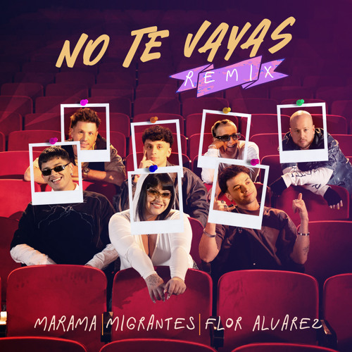
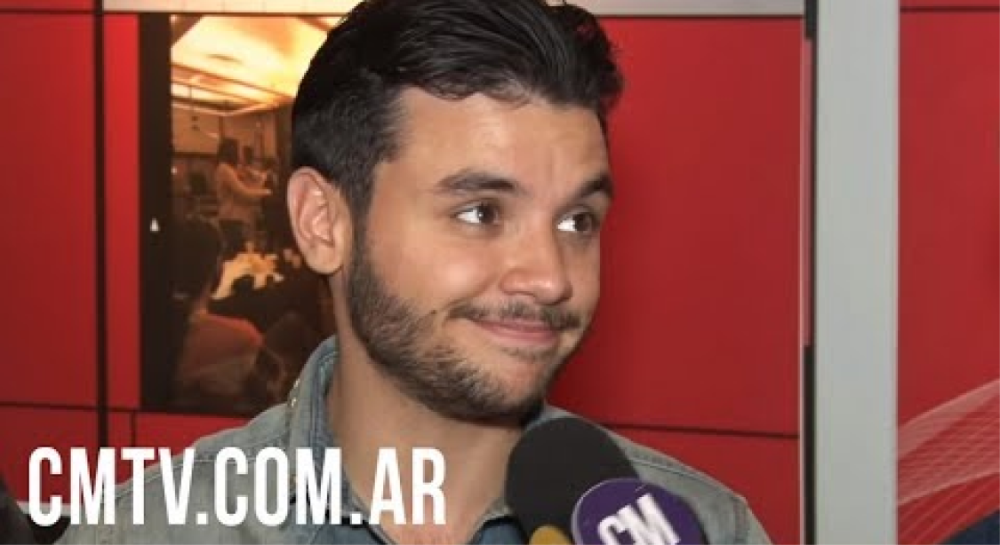
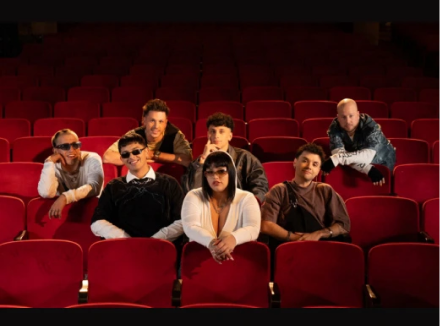

Márama nació en la mitad de 2014, en Uruguay. El productor Fernando Vázquez se comunicó con Agustín Casanova, actualmente cantante de la banda, y le dieron forma al proyecto. Completan la formacion: Marcos Ifrán, Alejandro Vázquez, Pablo Arnoletti y Martín Zina. Márama conforma la cama de bandas que interpretan cumbia mediante temas propios o realizando versiones de hits de todos los tiempos. Podrían compararse con Vi-Em, Agapornis, Los Totora, Los Bonnitos, Grupo Play y otros.
DISCOS
SENCILLO

No Te Vayas (Remix) (2024)
SENCILLOTal Vez (Remix) (2024)
SENCILLOTodo Comenzó Bailando (Remix) (2024)
SENCILLOUna Noche Contigo (Remix) (2024)
VIDEOS

Entrevista Argentina | Mayo 2017
NOTICIAS
6 JUNIOMÁRAMA
MÁRAMA LANZA "NO TE VAYAS (REMIX)" JUNTO A FLOR ÁLVAREZ Y MIGRANTESMarama continúa reversionando sus clásicos en el marco de sus #10Años y en esta oportunidad se une a Flor Álvarez y a la banda Migrantes para presentarnos una nueva versión de "No Te...

LEER MÁS
26 SEPTIEMBREMÁRAMA
ULISES BUENO ESTRENA "SÉ QUE NO" JUNTO A EL POLACO, MÁRAMA Y MATÍAS VALDEZ“Sé que los días pueden parecer grises, pero no te vas a caer” dice el nuevo tema del cuartetero cordobés que se une a las figuras más relevantes de la escena bailable para cantarle a la esperanza...
LEER MÁS
5 FEBREROMÁRAMA
LANZAMIENTO DE MÁRAMA CON RODRIGO TAPARIMárama se une a Rodrigo Tapari en "Dame un besito"